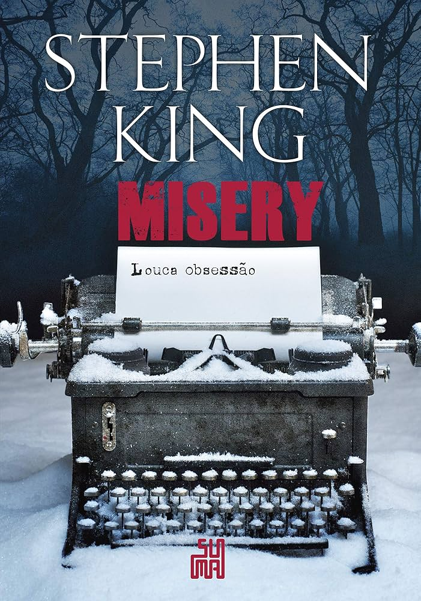
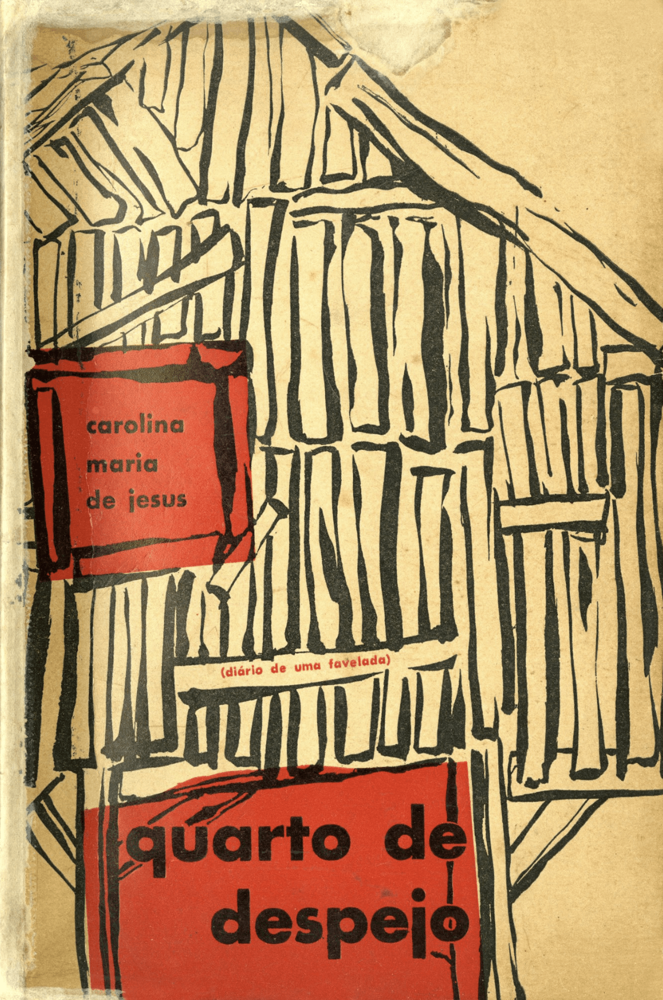

Misery
Misery, de Stephen King, conta a história de Paul Sheldon, um escritor que sofre um acidente e é resgatado por Annie Wilkes, sua fã obsessiva. Annie o mantém preso em sua casa e o obriga a escrever uma nova história para sua personagem favorita, Misery. Enquanto tenta sobreviver, Paul precisa usar sua inteligência para enfrentar Annie e encontrar uma forma de escapar.
O detento
O Detento, de Freida McFadden, acompanha uma mulher que começa a trabalhar em uma prisão e acaba se envolvendo com um detento que guarda segredos sobre o passado. Conforme a história avança, ela percebe que nem tudo é o que parece e começa a questionar em quem pode confiar. O livro mistura suspense, mistério e reviravoltas, mantendo o leitor em dúvida sobre a verdadeira história dos personagens.

Quarto do despejo
reúne os relatos de Carolina Maria de Jesus sobre sua vida na favela do Canindé, em São Paulo. A autora descreve a pobreza, a fome, as dificuldades para criar seus filhos e a desigualdade social que enfrentava diariamente. O livro mostra, através de sua própria experiência, a realidade das pessoas que viviam à margem da sociedade.
Anticristo
O Anticristo é uma obra filosófica em que Nietzsche critica fortemente o cristianismo e seus valores morais. Ele questiona ideias como humildade, culpa e compaixão, defendendo uma valorização maior da força, da autonomia e da afirmação da vida. O livro apresenta uma reflexão provocadora sobre religião, moralidade e os valores que influenciam a sociedade.
Até o último de nós
O livro acompanha personagens envolvidos em uma situação marcada por segredos, desconfiança e acontecimentos inesperados. Conforme a história avança, verdades do passado começam a aparecer e mudam a maneira como os personagens enxergam uns aos outros. Com bastante suspense e reviravoltas, a obra mantém o leitor curioso para descobrir o que realmente aconteceu e até onde cada personagem está disposto a ir.
A empregada - Triologia
A trilogia acompanha Millie, uma jovem que trabalha como empregada doméstica para famílias aparentemente perfeitas, mas que escondem segredos perigosos. Ao longo dos três livros, ela se envolve em situações cada vez mais misteriosas e passa a descobrir que nem sempre as pessoas são quem parecem ser. A série é formada por A Empregada, O Segredo da Empregada e A Empregada Está de Olho. As histórias misturam suspense, mistério, segredos e muitas reviravoltas, mantendo o leitor curioso sobre o que acontecerá com Millie e em quem ela pode confiar.